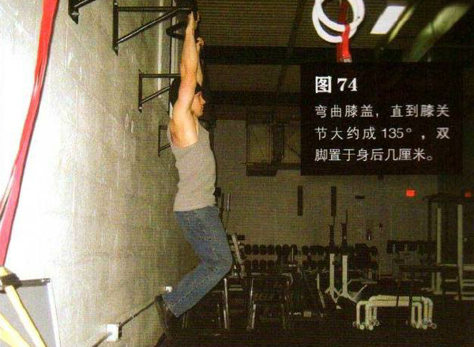

悬垂屈举腿
向上跳起，抓住高过头顶的横杆。身体成一直缪星叙脚离地。双手大致与肩同宽，肩部收紧。弯曲膝盖，直到膝关节大约成 135°双脚置于身后几厘米。这是该动作的起始姿势（图74）
以髋部为轴，平缓地抬起双腿，直到双脚与骨盆在一个高度上。这是该动作的结束姿势（图 75）。暂停一下，然后做反向动作，如此重复。整个运动过程中，只能移动髋部，膝盖要保持锁定。举腿时呼气，下降时吸气，始终保持收腹。

初级标准：1 组，5 次
中级标准：2 组，各 10 次
高级标准：2 组，各 15 次